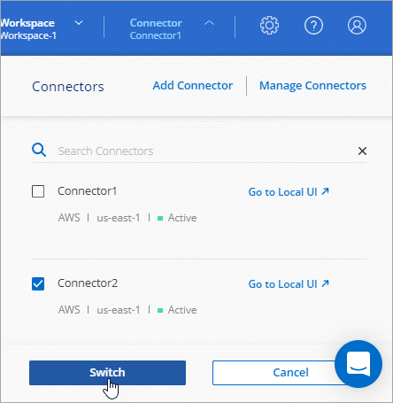
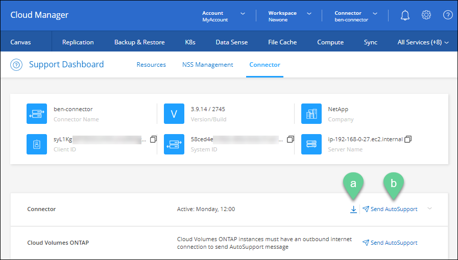
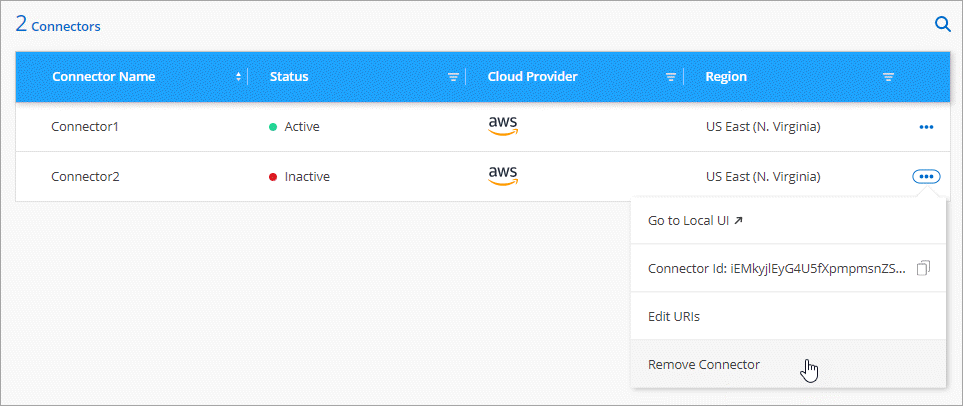

请求文档变更
请求文档变更 在 GitHub 上编辑
在 GitHub 上编辑 提供者指南
提供者指南管理现有连接器
创建一个或多个连接器后，您可以通过在连接器之间切换，连接到在连接器上运行的本地用户界面等方式来管理这些连接器。
在连接器之间切换
如果您有多个连接器，则可以在它们之间切换，以查看与特定连接器关联的工作环境。
例如，假设您正在多云环境中工作。您可能在 AWS 中有一个连接器，在 Google Cloud 中有另一个连接器。您需要在这些连接器之间进行切换，以管理在这些云中运行的 Cloud Volumes ONTAP 系统。
-
单击 * 连接器 * 下拉列表，选择另一个连接器，然后单击 * 交换机 * 。

Cloud Manager 将刷新并显示与选定 Connector 关联的工作环境。
访问本地 UI
虽然您应该从 SaaS 用户界面执行几乎所有任务，但连接器上仍提供本地用户界面。如果您要从无法访问出站Internet的政府区域或站点访问Cloud Manager、则需要使用在Connector上运行的本地用户界面。
-
打开 Web 浏览器并输入以下 URL ：
https://ipaddress[]
ipaddress 可以是 localhost ，专用 IP 地址或公有 IP 地址，具体取决于主机的配置。例如，如果连接器位于公有云中且没有公有 IP 地址，则必须输入与连接器主机连接的主机的专用 IP 地址。
-
输入您的用户名和密码以登录。
下载或发送 AutoSupport 消息
如果您遇到问题， NetApp 人员可能会要求您向 NetApp 支持发送 AutoSupport 消息以进行故障排除。
-
连接到连接器本地 UI ，如上一节所述。
-
在 Cloud Manager 控制台右上角，单击帮助图标，然后选择 * 支持 * 。

-
单击 * 连接器 * 。
-
根据向 NetApp 支持部门发送信息的方式，选择以下选项之一：
-
选择选项以将 AutoSupport 消息下载到本地计算机。然后，您可以使用首选方法将其发送给 NetApp 支持部门。
-
单击 * 发送 NetApp* 以直接将消息发送给 AutoSupport 支持。

-
连接到 Linux VM
如果您需要连接到运行 Connector 的 Linux VM ，可以使用云提供商提供的连接选项来执行此操作。
Azure 酒店
在 Azure 中创建 Connector VM 时，您选择使用密码或 SSH 公有 密钥进行身份验证。使用您选择的身份验证方法连接到虚拟机。
Google Cloud
在 Google Cloud 中创建 Connector 时，无法指定身份验证方法。但是，您可以使用 Google Cloud Console 或 Google Cloud CLI （ gcloud ）连接到 Linux VM 实例。
应用安全更新
在 Connector 上更新操作系统，以确保使用最新的安全更新对其进行修补。
-
访问 Connector 主机上的命令行界面 Shell 。
-
使用提升的权限运行以下命令：
sudo -s service service-manager stop yum -y update –-security service service-manager start
更改连接器的 IP 地址
如果您的业务需要，您可以更改云提供商自动分配的 Connector 实例的内部 IP 地址和公有 IP 地址。
-
按照云提供商的说明更改连接器实例的本地 IP 地址或公有 IP 地址（或两者）。
-
如果您更改了公有 IP 地址，并且需要连接到在 Connector 上运行的本地用户界面，请重新启动 Connector 实例以向 Cloud Manager 注册新的 IP 地址。
-
如果更改了专用 IP 地址，请更新 Cloud Volumes ONTAP 配置文件的备份位置，以便将备份发送到 Connector 上的新专用 IP 地址。
-
从 Cloud Volumes ONTAP 命令行界面运行以下命令以删除当前备份目标：
system configuration backup settings modify -destination "" -
转到 Cloud Manager 并打开工作环境。
-
单击菜单并选择 * 高级 > 配置备份 * 。
-
单击 * 设置备份目标 * 。
-
编辑 Connector 的 URI
添加并删除 Connector 的 URI 。
-
单击 Cloud Manager 标题中的 * 连接器 * 下拉列表。
-
单击 * 管理连接器 * 。
-
单击 Connector 的操作菜单，然后单击 * 编辑 URIs* 。
-
添加并删除 URI ，然后单击 * 应用 * 。
修复使用 Google Cloud NAT 网关时的下载失败问题
连接器会自动下载 Cloud Volumes ONTAP 的软件更新。如果您的配置使用 Google Cloud NAT 网关，则下载可能会失败。您可以通过限制软件映像划分到的部件数来更正此问题描述。必须使用 Cloud Manager API 完成此步骤。
-
使用以下 JSON 正文向 /occm/config 提交 PUT 请求：
{
"maxDownloadSessions": 32
}maxDownloadSessions_ 的值可以是 1 或大于 1 的任意整数。如果值为 1 ，则下载的映像不会被拆分。
请注意， 32 是一个示例值。应使用的值取决于 NAT 配置以及可以同时拥有的会话数。
在不访问 Internet 的情况下升级内部连接器
如果您 "已在无法访问 Internet 的内部主机上安装 Connector"，您可以在 NetApp 支持站点上提供较新版本时升级 Connector 。
在升级过程中， Connector 需要重新启动，因此用户界面在升级期间将不可用。
-
从下载 Cloud Manager 软件 "NetApp 支持站点"。
-
将安装程序复制到 Linux 主机。
-
分配运行脚本的权限。
chmod +x /path/cloud-manager-connector-offline-v3.9.14 -
运行安装脚本：
sudo /path/cloud-manager-connector-offline-v3.9.14 -
升级完成后，您可以转到 * 帮助 > 支持 > 连接器 * 来验证连接器的版本。
从 Cloud Manager 中删除 Connectors
如果某个 Connector 处于非活动状态，您可以将其从 Cloud Manager 中的 Connectors 列表中删除。如果删除了 Connector 虚拟机或卸载了 Connector 软件，则可以执行此操作。
有关删除连接器，请注意以下事项：
-
此操作不会删除虚拟机。
-
无法还原此操作—从 Cloud Manager 中删除 Connector 后，便无法将其重新添加到 Cloud Manager 中。
-
单击 Cloud Manager 标题中的 * 连接器 * 下拉列表。
-
单击 * 管理连接器 * 。
-
单击非活动连接器的操作菜单，然后单击 * 删除连接器 * 。

-
输入 Connector 的名称进行确认，然后单击删除。
Cloud Manager 将从其记录中删除 Connector 。
卸载 Connector 软件
卸载 Connector 软件以解决问题或从主机中永久删除此软件。您需要使用的步骤取决于您是将 Connector 安装在可访问 Internet 的主机上，还是安装在无法访问 Internet 的受限网络中的主机上。
从可访问 Internet 的主机卸载
联机连接器包含一个卸载脚本，您可以使用此脚本卸载软件。
-
在 Linux 主机上运行卸载脚本：
-
/opt/application/netapp/cloudmanager/bin/uninstall.sh [silent]*
silent 运行此脚本，而不提示您进行确认。
-
从无法访问 Internet 的主机卸载
如果您从 NetApp 支持站点下载了 Connector 软件并将其安装在无法访问 Internet 的受限网络中，请使用以下命令。
-
在 Linux 主机中，运行以下命令：
docker-compose -f /opt/application/netapp/ds/docker-compose.yml down -v rm -rf /opt/application/netapp/ds